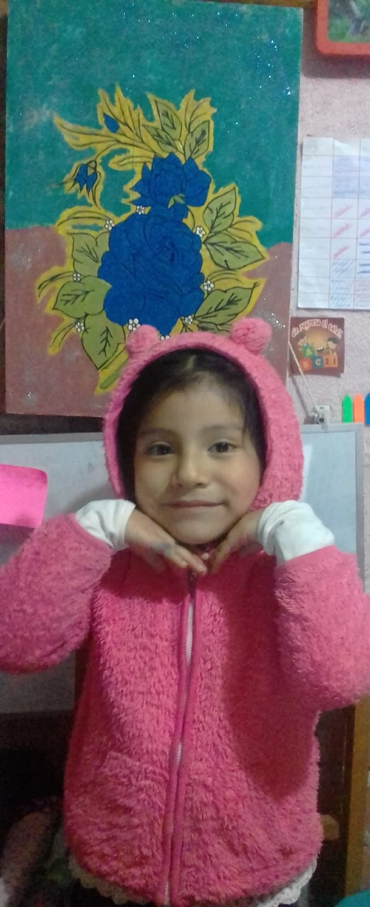

Fotos de mi infancia
- Aprendí a montar bicicleta con ayuda de mi hermano mayor.
- Jugábamos a construir casitas con ramas en el campo.
- Las tardes de lluvia lo aprovechabamos para ver los dibujos animados que mas nos justaba.
Los primeros juegos, los descubrimientos, las risas inocentes. Mi infancia fue un jardín de aprendizajes y aventuras.